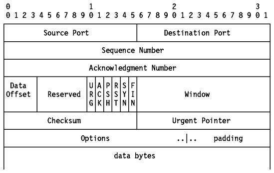

Table of Contents
Table of Contents  UDP
Application Programming Interface
UDP
Application Programming Interface
TCP/IP Tutorial and Technical Overview

Figure: Transmission Control Protocol (TCP)
TCP is a standard protocol with STD number 7.
TCP is described by RFC 793 - Transmission Control Protocol.
Its status is recommended, but in practice every
TCP/IP implementation which is not used exclusively for routing will include
TCP.
TCP provides considerably more facilities for applications than UDP, notably
error recovery, flow control and reliability. TCP is a
connection-oriented protocol unlike UDP which is connectionless.
Most of the user application protocols, such as TELNET and FTP, use TCP.
The socket concept was discussed earlier in
Ports and Sockets.
Two processes communicate via TCP sockets. The socket model provides
a process with a full-duplex byte stream connection to another process. The
application need not concern itself with the management of this stream; these
facilities are provided by TCP.
TCP uses the same port principle as UDP (see
Ports) to provide multiplexing. Like UDP, TCP
uses well-known and ephemeral ports. Each side of a TCP connection has a
socket which can be identified by the triple <TCP, IP address, port
number>. This is also called a half-association.
If two processes are communicating over TCP, they have a
logical connection that is uniquely identifiable by the two sockets
involved, that is by the combination <TCP, local IP address, local port,
remote IP address, remote port>. See
Figure - TCP Connection. Server processes
are able to manage multiple conversations through a single port.
Figure: TCP Connection - Processes X and Y communicate over a TCP
connection carried by IP datagrams.
As noted above, the primary purpose of TCP is to
provide reliable logical circuit or connection service between pairs of
processes. It does not assume reliability from the lower-level
protocols (such as IP) so TCP must guarantee this itself.
TCP can be characterized by the following facilities it provides for the
applications using it:
-
Stream Data Transfer
- From the application's viewpoint, TCP transfers a
contiguous stream of bytes through the internet. The application does not
have to bother with chopping the data into basic blocks or datagrams. TCP does
this by grouping the bytes in TCP segments, which
are passed to IP for transmission to the destination. Also, TCP itself decides
how to segment the data and it may forward the data at its own convenience.
Sometimes, an application needs to be sure that all the data passed to TCP
has actually been transmitted to the destination. For that
reason, a push function is defined. It will push
all remaining TCP segments still in storage to the destination host. The normal
close connection function also pushes the data to the destination.
-
Reliability
- TCP assigns a sequence number to each byte
transmitted, and expects a positive acknowledgment (ACK) from the receiving
TCP. If the ACK is not received within a timeout interval, the data is
retransmitted. As the data is transmitted in blocks (TCP segments) only the
sequence number of the first data byte in the segment is sent to the
destination host.
The receiving TCP uses the sequence numbers to rearrange the segments when
they arrive out of order, and to eliminate duplicate segments.
-
Flow Control
- The receiving TCP, when sending an ACK back to the
sender, also indicates to the sender the number of bytes it can receive beyond
the last received TCP segment, without causing overrun and overflow in its
internal buffers. This is sent in the ACK in the form of the highest sequence
number it can receive without problems. This mechanism is also referred to as a
window-mechanism and we will discuss it in more detail later in this
chapter.
-
Multiplexing
- Is achieved through the use of ports, just as with
UDP.
-
Logical Connections
- The reliability and flow control mechanisms described
above require that TCP initializes and maintains certain status information for
each ``data stream''. The combination of this status, including sockets,
sequence numbers and window sizes, is called a logical connection. Each
connection is uniquely identified by the pair of sockets used by the sending
and receiving processes.
-
Full Duplex
- TCP provides for concurrent data streams in both
directions.
A simple transport protocol might use the following
principle: send a packet and then wait for an acknowledgment from the receiver
before sending the next packet. If the ACK is not received within a certain
amount of time, retransmit the packet.
Figure: The Window Principle
While this mechanism ensures reliability, it only uses a part of the available
network bandwidth.
Consider now a protocol where the sender groups its packets to be
transmitted as Figure - Message Packets:
Figure: Message Packets
And uses the following rules:
- The sender may send all packets within the window without receiving an ACK,
but must start a timeout timer for each of them.
- The receiver must acknowledge each packet received, indicating the sequence
number of the last well-received packet.
- The sender slides the window on each ACK received.
In our example, the sender may transmit packets 1 to 5 without waiting for any
acknowledgment:

Figure: Window Principle
At the moment the sender receives the ACK 1 (acknowledgment for packet 1),
it may slide its window to exclude packet 1:
Figure: Message Packets
At this point, the sender may also transmit packet 6.
Imagine some special cases:
- Packet 2 gets lost: the sender will not receive an ACK 2, so its window
will remain in the position 1 (as last picture above). In fact, as the receiver
did not receive packet 2, it will acknowledge packets 3, 4 and 5 with an ACK 1,
since packet 1 was the last one received ``in sequence''. At the sender's side,
eventually a timeout will occur for packet 2 and it will be retransmitted. Note
that reception of this packet by the receiver will generate an ACK 5, since it
has now successfully received all packets 1 to 5, and the sender's window will
slide four positions upon receiving this ACK 5.
- Packet 2 did arrive, but the acknowledgment gets lost: the sender does not
receive ACK 2, but will receive ACK 3. ACK 3 is an acknowledgment for
all packets up to 3 (including packet 2) and the sender may now slide
his window to packet 4.
This window mechanism ensures:
- Reliable transmission.
- Better use of the network bandwidth (better throughput).
- Flow-control, as the receiver may delay replying to a packet with an
acknowledgment, knowing its free buffers available and the window-size of the
communication.
The above window principle is used in TCP, but with a
few differences:
- As TCP provides a byte-stream connection, sequence numbers are assigned to
each byte in the stream. TCP divides this contiguous byte stream into TCP
segments to transmit them. The window principle is used at the byte level; that
is, the segments sent and ACKs received will carry byte-sequence numbers and
the window size is expressed as a number of bytes, rather than a number of
packets.
- The window size is determined by the receiver, when the connection is
established, and is variable during the data transfer. Each ACK message
will include the window-size that the receiver is ready to deal with at that
particular time.
The sender's data stream can now be seen as:
Figure: Window Principle Applied to TCP
Where:
-
A
- Bytes that are transmitted and have been acknowledged.
-
B
- Bytes that are sent but not yet acknowledged.
-
C
- Bytes that may be sent without waiting for any acknowledgment.
-
D
- Bytes that may not yet be sent.
Remember that TCP will block bytes into segments, and a TCP segment only
carries the sequence number of the first byte in the segment.

Figure: TCP Segment Format
Where:
-
Source Port
- The 16-bit source port number, used by the receiver to reply.
-
Destination Port
- The 16-bit destination port number.
-
Sequence Number
- The sequence number of the first data byte in this segment. If the SYN
control bit is set, the sequence number is the initial sequence number (n) and
the first data byte is n+1.
-
Acknowledgment Number
- If the ACK control bit is set, this field contains the value of the next
sequence number that the receiver is expecting to receive.
-
Data Offset
- The number of 32-bit words in the TCP header. It indicates where the data
begins.
-
Reserved
- Six bits reserved for future use; must be zero.
-
URG
- Indicates that the urgent pointer field is significant in this segment.
-
ACK
- Indicates that the acknowledgment field is significant in this segment.
-
PSH
- Push function.
-
RST
- Resets the connection.
-
SYN
- Synchronizes the sequence numbers.
-
FIN
- No more data from sender.
-
Window
- Used in ACK segments. It specifies the number of data bytes beginning with
the one indicated in the acknowledgment number field which the receiver (= the
sender of this segment) is willing to accept.
-
Checksum
- The 16-bit one's complement of the one's complement
sum of all 16-bit words in a pseudo-header, the TCP header and the TCP data.
While computing the checksum, the checksum field itself is considered zero.
The pseudo-header is the same as that used by UDP for calculating the
checksum. It is a pseudo-IP-header, only used for the checksum calculation,
with the format shown in Figure - Pseudo-IP
Header:
Figure: Pseudo-IP Header
-
Urgent Pointer
- Points to the first data octet following the urgent data. Only significant
when the URG control bit is set.
-
Options
- Just as in the case of IP datagram options, options can be either:
- A single byte containing the option number, or
- A variable length option in the following format:
Figure: IP Datagram Option - Variable length option.
There are currently only three options defined:
Kind Length Meaning
---- ------ -------
0 - End of option list.
1 - No-Operation.
2 4 Maximum Segment Size.
Figure: Maximum Segment Size Option
This option is only used during the establishment of the
connection (SYN control bit set) and is sent from the side that is to receive
data to indicate the maximum segment length it can handle. If this option is
not used, any segment size is allowed.
-
Padding
- All zero bytes used to fill up the TCP header to a total length that is a
multiple of 32 bits.
TCP sends data in variable length segments. Sequence
numbers are based on a byte count. Acknowledgments specify the sequence
number of the next byte that the receiver expects to receive.
Now suppose that a segment gets lost or corrupted. In this case, the
receiver will acknowledge all further well-received segments with an
acknowledgment referring to the first byte of the missing packet. The sender
will stop transmitting when it has sent all the bytes in the window.
Eventually, a timeout will occur and the missing segment will be retransmitted.
Suppose a window size of 1500 bytes, and segments of 500 bytes.
Figure: Acknowledgment and Retransmission Process
A problem now arises, since the sender does know that segment 2 is lost or
corrupted, but doesn't know anything about segments 3 and 4. The sender should
at least retransmit segment 2, but it could also retransmit segments 3 and 4
(since they are within the current window). It is possible that:
- Segment 3 has been received, and for segment 4 we don't know: it could be
received, but ACK didn't reach us yet, or it could be lost also.
- Segment 3 was lost, and we received the ACK 1500 upon the reception of
segment 4.
Each TCP implementation is free to react to a timeout as the implementers wish.
It could retransmit only segment 2, but in case 2 above, we will be waiting
again until segment 3 times out. In this case, we lose all of the throughput
advantages of the window mechanism. Or TCP might immediately resend all of the
segments in the current window.
Whatever the choice, maximal throughput is lost. This is because the ACK
does not contain a second acknowledgment sequence number indicating the actual
frame received.
Each TCP should implement an algorithm to adapt the
timeout values to be used for the round trip time of the segments. To do this,
TCP records the time at which a segment was sent, and the time at which the ACK
is received. A weighted average is calculated over several of these round trip
times, to be used as a timeout value for the next segment(s) to be sent.
This is an important feature, since delays may be variable on an internet,
depending on multiple factors, such as the load of an intermediate low-speed
network or the saturation of an intermediate IP gateway.
Before any data can be transferred, a connection has to
be established between the two processes. One of the processes (usually the
server) issues a passive OPEN call, the other an
active OPEN call. The passive OPEN call remains dormant until another
process tries to connect to it by an active OPEN.
On the network, three TCP segments are exchanged:
Figure: TCP Connection Establishment
This whole process is known as three-way
handshake.
Note that the exchanged TCP segments include the initial sequence numbers from
both sides, to be used on subsequent data transfers.
Closing the connection is done implicitly by sending a TCP segment
with the FIN bit (no more data) set. As the connection is full-duplex (that is,
we have two independent data streams, one in each direction), the FIN segment
only closes the data transfer in one direction. The other process will now send
the remaining data it still has to transmit and also ends with a TCP segment
where the FIN bit is set. The connection is deleted (status information on both
sides) once the data stream is closed in both directions.
TCP segments are transported in IP datagrams with the
following parameter settings:
Type of Service = 00000000
that is: Precedence = routine
Delay = normal
Throughput = normal
Time to Live = 00111100 (1 minute)
The TCP application programming interface is not fully
defined. Only some base functions it should provide are
described in RFC 793 - Transmission Control
Protocol. As is the case with most RFCs in the TCP/IP protocol suite, a
great degree of freedom is left to the implementers, thereby allowing for
optimal (operating system-dependent) implementations, resulting in better
efficiency (greater throughput).
The following function calls are described in the RFC:
-
Open
- To establish a connection, takes several parameters:
- Active/passive
- Foreign socket
- Local port number
- Timeout value (optional)
- And lots of other options
Returns a local connection name, which is used to reference this
particular connection in all other functions.
-
Send
- Causes data in a referenced user buffer to be sent over the connection. Can
optionally set the URGENT flag or the PUSH flag.
-
Receive
- Copies incoming TCP data to a user buffer.
-
Close
- Closes the connection; causes a push of all remaining data and a TCP
segment with FIN flag set.
-
Status
- Is an implementation-dependent call that could return information such as:
- Local and foreign socket
- Send and receive window sizes
- Connection state
- Local connection name
-
Abort
- Causes all pending Send and Receive operations to be aborted, and a RESET
to be sent to the foreign TCP.
Full details can be found in RFC 793 - Transmission Control Protocol and
the product implementation API in the Programmer's Guides listed in
Bibliography.
Table of Contents  Asynchronous
Transfer Mode (ATM)
Asynchronous
Transfer Mode (ATM)